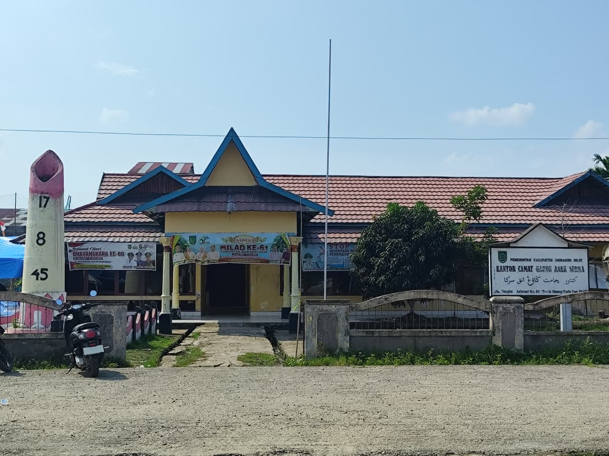
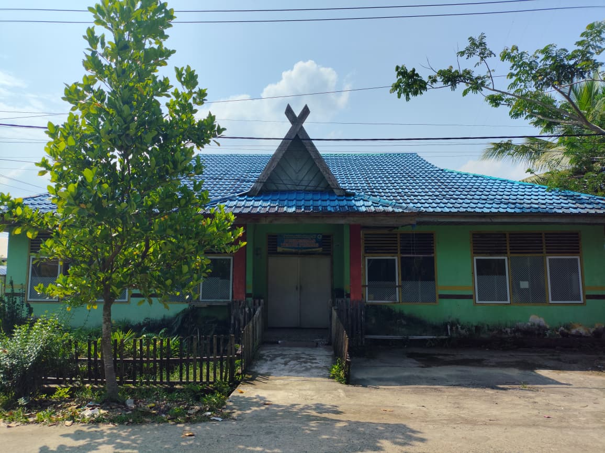
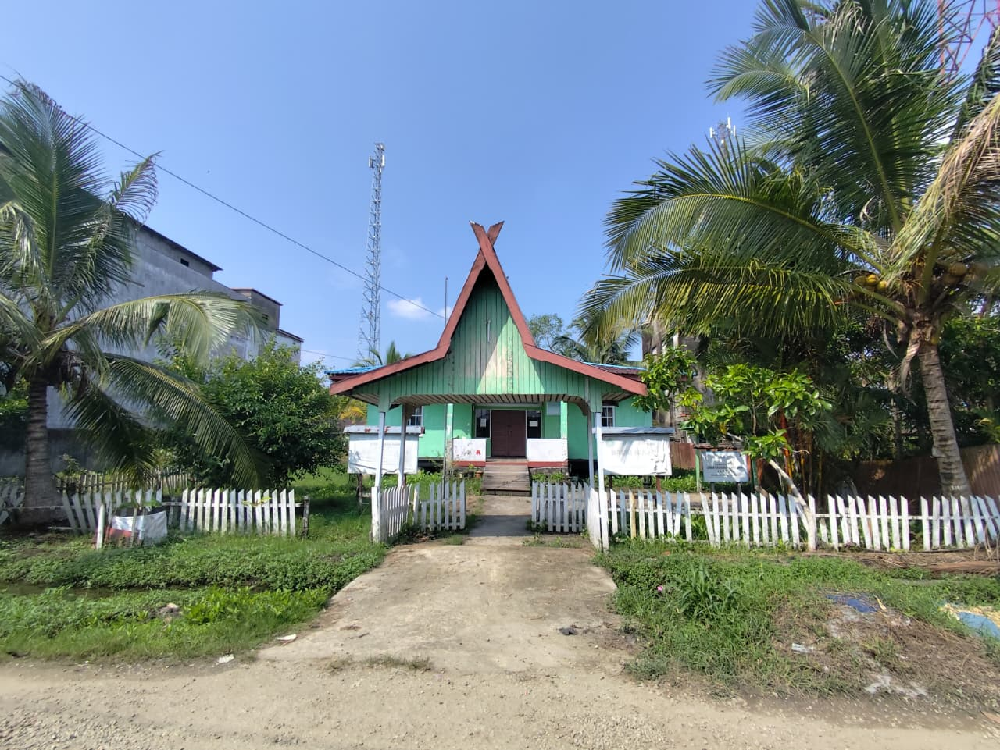
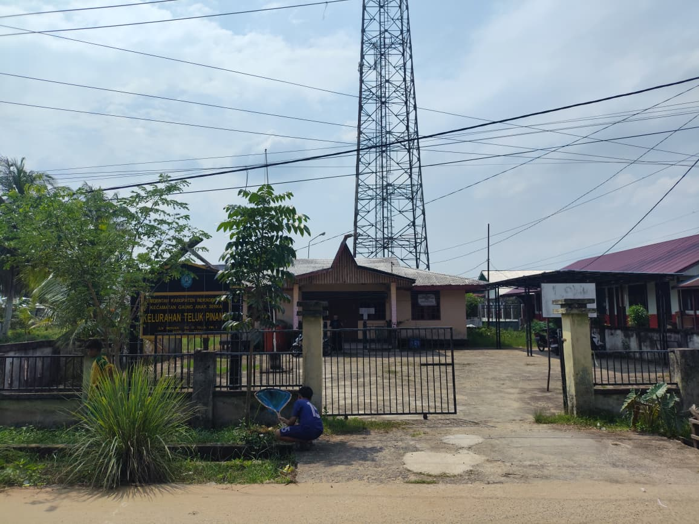
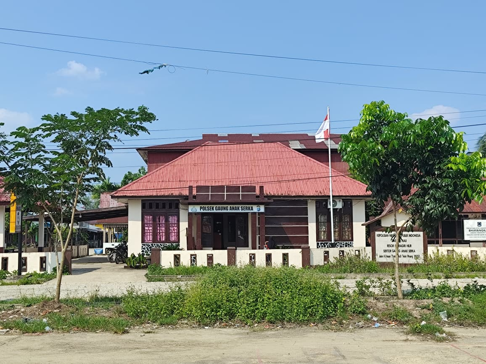
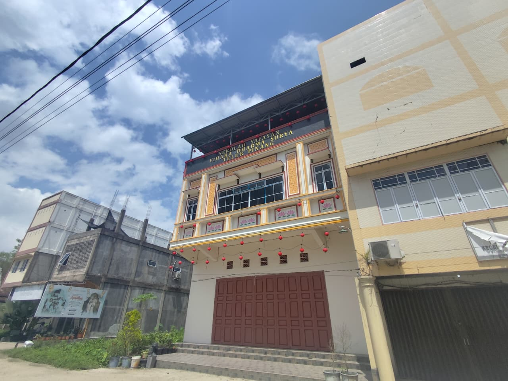
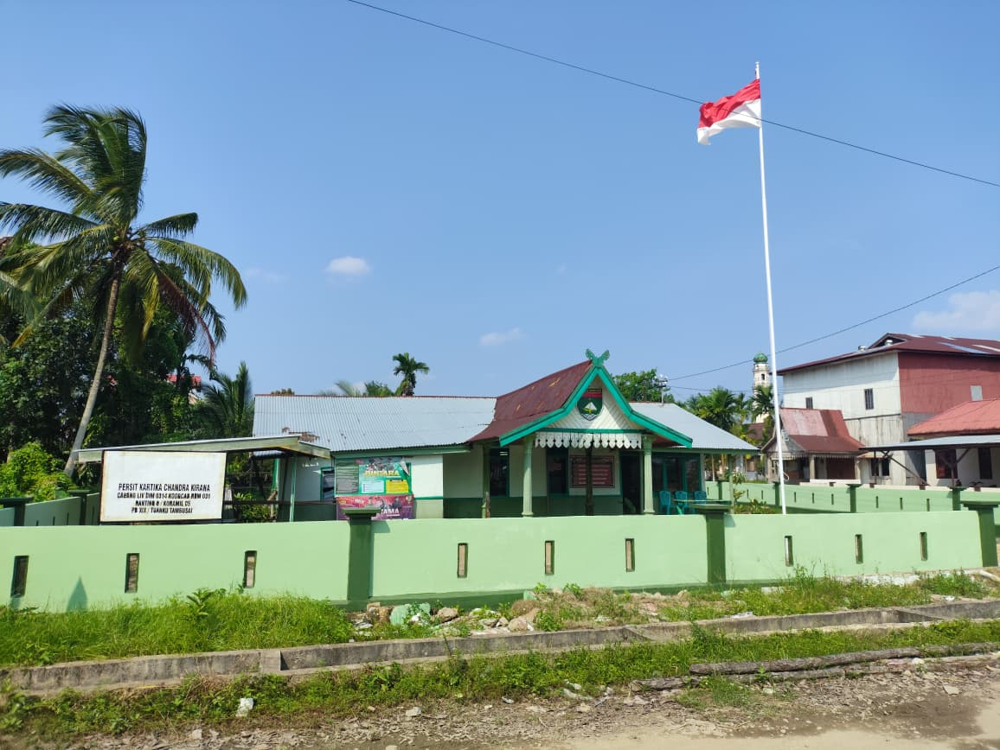
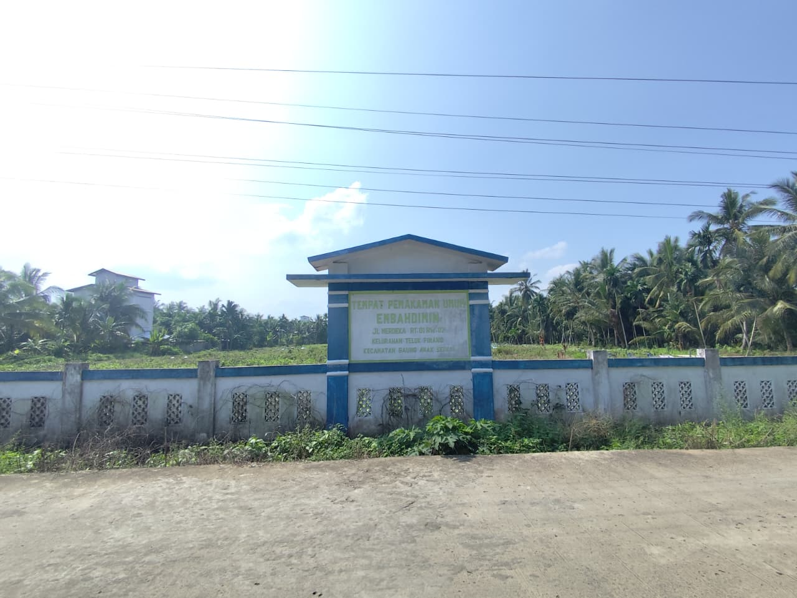
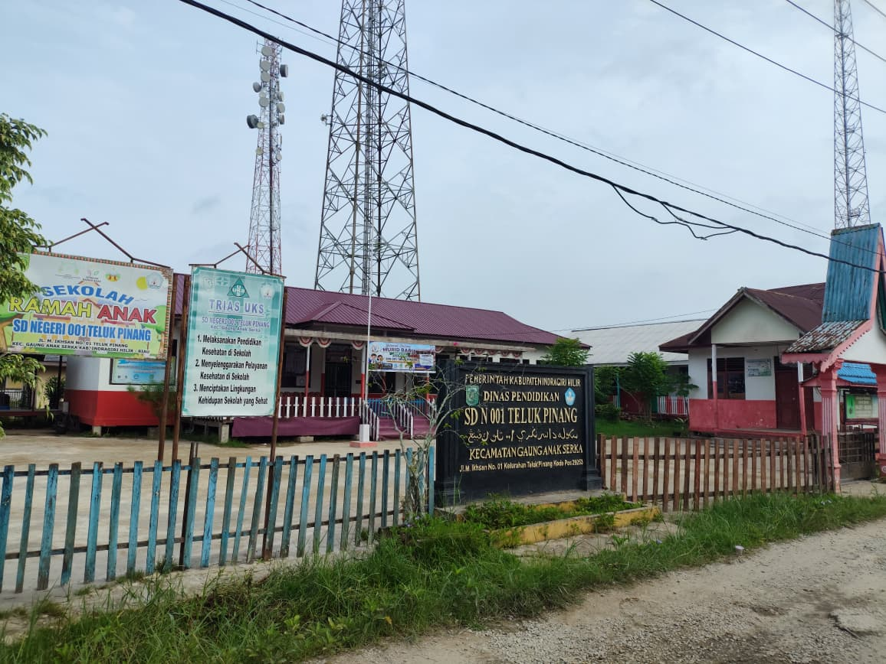
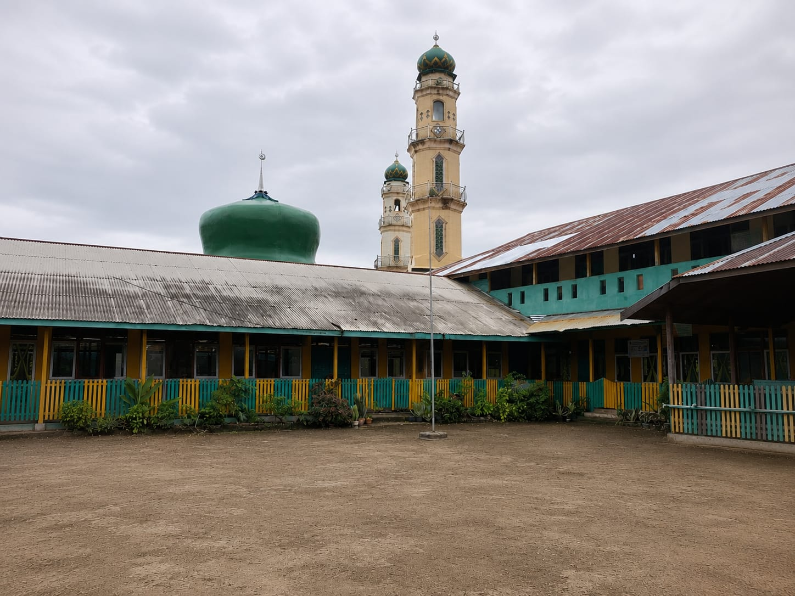

Daftar Tempat Strategis
Berikut adalah daftar fasilitas umum dan tempat strategis di Kelurahan Teluk Pinang.

Kantor Camat Gaung Anak Serka
Pusat tata kelola pemerintahan tingkat kecamatan yang mengkoordinasikan pelayanan publik serta kebijakan administratif.

Puskesmas
Fasilitas kesehatan dasar yang menyediakan pelayanan medis dan edukasi kesehatan preventif bagi warga.

Kantor Urusan Agama
Lembaga pelayanan publik yang memfasilitasi administrasi pencatatan nikah dan bimbingan keluarga.

SMP Negeri 1 Gaung Anak Serka
Lembaga pendidikan formal tingkat menengah pertama untuk pengembangan akademik dan karakter siswa.

Kantor Lurah
Kantor operasional utama yang menjadi garda terdepan dalam pelayanan administrasi kependudukan.

POLSEK Gaung Anak Serka
Instansi kepolisian yang bertugas menjaga keamanan dan ketertiban masyarakat di wilayah setempat.

Sekolah Yayasan Vihara Dhrama Surya
Institusi pendidikan swasta yang berkontribusi dalam mencerdaskan anak didik di kawasan Teluk Pinang.

Koramil 005 Tuanku Tambusai
Satuan teritorial TNI yang menjaga stabilitas keamanan dan membantu kegiatan sosial masyarakat.

Surau Raudhatul Jannah
Tempat ibadah yang menjadi pusat kegiatan spiritual dan mempererat tali silaturahmi warga.

TPU MBAH DIMIN
Area pemakaman umum yang dikelola untuk melayani kebutuhan pemakaman warga masyarakat.

SDN 004 Teluk Pinang
Sekolah dasar negeri yang menyediakan akses pendidikan dasar berkualitas bagi anak-anak setempat.

Masjid Besar Al-Falah
Ikon religius dan pusat ibadah utama kegiatan keagamaan di Teluk Pinang.

Masjid Jami Al-Hasanah
Tempat ibadah bersejarah dengan peran penting dalam kehidupan sosial warga.

Surau Baiturrahman
Fasilitas ibadah lingkungan yang nyaman bagi warga untuk kegiatan harian.

SDN 001 Teluk Pinang
Sekolah dasar negeri utama yang menjadi fondasi ilmu pengetahuan anak-anak di kelurahan.

SDS 002 Muhammadiyah
Lembaga pendidikan swasta yang mengintegrasikan nilai-nilai keislaman dan akademik.